Now that your kernel can talk to your network hardware, what's needed is a way
for software to tell the kernel to pass some information along, and vice versa.
We need to configure an interface. We need ifconfig(8).
ifconfig is probably best learned by example; you may want
to just take a look at your rc.inet1 file (covered in
the section called rc.inet1) to see how it's done there. The simplest and most
common case looks something like this:
This line brings up eth0 (the first ethernet interface; for token ring use
tr0, ppp use ppp0, etc.) with an IP of 192.168.1.10, a broadcast address of
192.168.1.255 (the entire 192.168.1 subnet) and a netmask of 255.255.255.0
(indicating that all of the first three parts of the “dotted quad”
of the IP address refer to the network, while all of the last part, .10, refers
to the host). Unless you're doing something funky, you can almost always use a
broadcast address that's the first three parts of your IP followed by 255.
You can also almost always use a netmask of 255.255.255.0. If you
are doing something funky, you probably know enough that
this part of the book isn't going to be of much use to you.
ifconfig can also be used just to see what's there. Run it
without any options or parameters to get a listing of all of your current
network interfaces and their settings.
In order to know where to send which data, the kernel maintains a routing
table. I'm not going to go into much detail about it here, but you can view
the routing table by running /sbin/route(8).
route -n will give you the table with IP addresses
instead of names; this is useful if you're having trouble talking to your name
server or if you're just not interested in the illusory world of domain names.
Fortunately, if you have a simple network setup (and most people do), the 2.2
kernels will automatically create the necessary routing table entries for you.
netconfig is part of the Slackware setup program, but like
most of setup's components it can be run on its own.
netconfig is very straightforward, and will walk you through
setting up a basic network connection. It's an especially good program to use
if you're not very familiar or comfortable with the network rc files. When
you run netconfig, you'll be greeted with this screen:
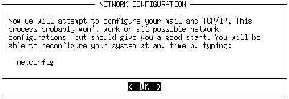
Next, you'll be prompted to enter the hostname and domain name of your
computer. You can probably just make something up for both of these, unless
you are setting up a server or other machine that lots of people will use.
Then, you will be asked if you will be using a static IP, DHCP, or just
loopback.
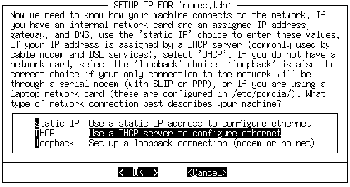
If you are not going to be connected to a network, choose loopback. If you
are setting up a computer that will be attached to a university or large
office network, you should most likely choose DHCP. Otherwise, choose
static IP. Unless you chose static IP, you are now done. If you did choose
static IP, you will now have to enter your computer's IP address, network
mask, broadcast address, and name server address. netconfig
will tell you how to figure out all of those numbers.
Slackware includes the pppsetup utility for configuring a
dialup connection to an ISP. It is located in the ppp.tgz
package in the N software series. pppsetup uses the same
interface as the setup program. If you don't remember how
to use this interface, refer back to the section called The setup Program in Chapter 3 for some
instructions. pppsetup asks you a series of questions and
sets up several configuration files in
/etc/ppp for you. As root, run
pppsetup; we'll walk through the questions here.
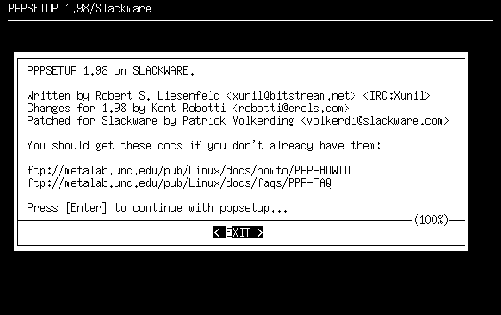
Phone number
The first question prompts for the phone number of your ISP, prefixed by
the type of dialing. For most people, you will want to use tone dialing.
If your ISP's phone number was 555-1013 and you used tone dialing, you
would enter atdt5551013 into the dialog box.
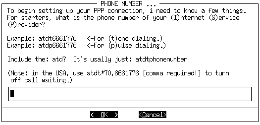
If you have call waiting on your phone line and want it disabled for when you
connect (probably a good idea), make sure to enter something like this
into the dialog box: atdt*70,5551013
The comma is required. It puts a 1.5 second pause between the *70 to
disable call waiting and the ISP's phone number. It won't work without
the comma.
Modem device
Next, select the location of your modem. If you know what COM device it
was under Windows, you can select the listed equivalent. Otherwise, you
might have to do some experimenting. The best course is to start at
ttyS0 and work your way down the list.
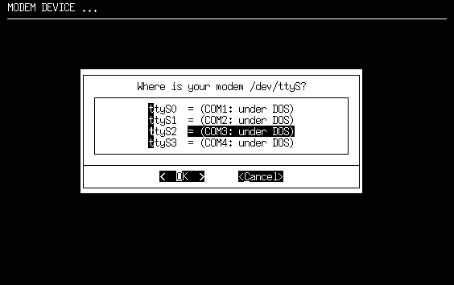
Modem baud rate
Next, pick the baud rate that's closest to your modem's. If you don't
know the baud rate, you could check the modem's box or any documentation
that came with it. Each selection has several examples, so it shouldn't
be hard to figure out.
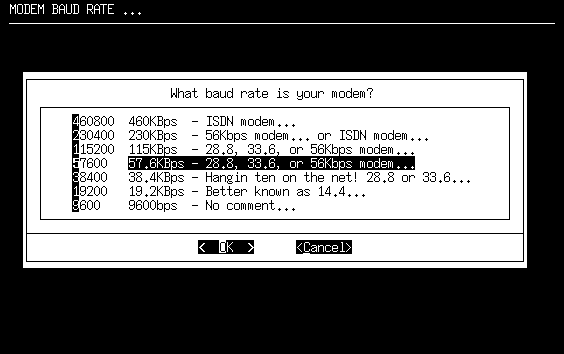
Callback
Now, you'll need to start referring to any information that your ISP gave
you. Few ISPs use callback, so you can probably safely select
“NO”. Callback is where you dial up the ISP and they then call
you back so you can log in.
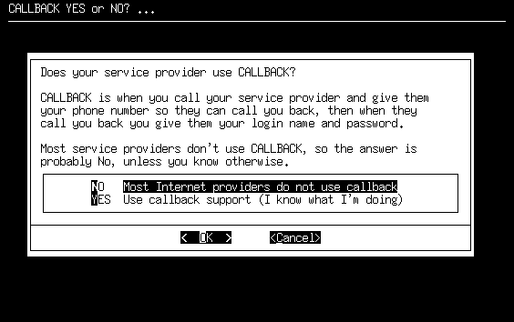
If you have to use callback, select “YES”. Then, you'll be
prompted to enter your phone number, a login name, and a password. You may
not have to enter an initial login name and password. Finally, you'll be
asked what kind of authentication scheme your ISP uses. If they use CHAP
or PAP, select “YES”. Later on, you'll need to set this up.
Refer to the section below. If they don't use either of those, select
“NO” and refer to the “Chat script” section below.
Modem init string
Unless you have a strange modem, you can probably just hit enter to select
the default init string (“AT&FH0”). Otherwise, refer to any
documentation that came with your modem as to what to use for the init string.
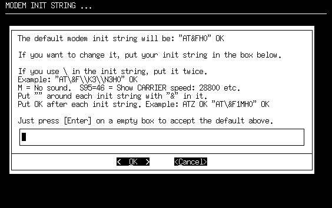
Domain name
Now, you'll need to enter the domain name of your ISP. This will be
something of the form “example.net”, “slackware.com”,
or something similar. (Okay, it's most definitely not going to be
slackware.com :)
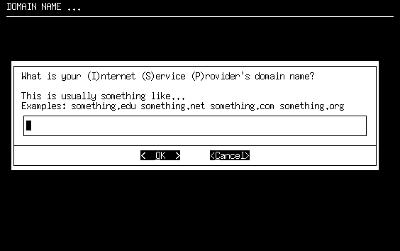
DNS IP address
Your ISP should have provided you with the IP address of their nameserver.
If you've got that IP address, punch it into the box. Otherwise, check in
with your ISP to see what number to use.
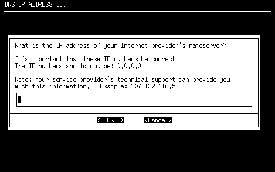
Authentication method
This question might also take some trial and error work. You need to figure
out if your ISP uses CHAP, PAP, or neither for user authentication. The
easiest way to figure this out is to call your ISP. However, if you
are presented with login and password prompts when you connect, you should
most likely choose "SCRIPT". Otherwise, check with your ISP to determine
which one to use.
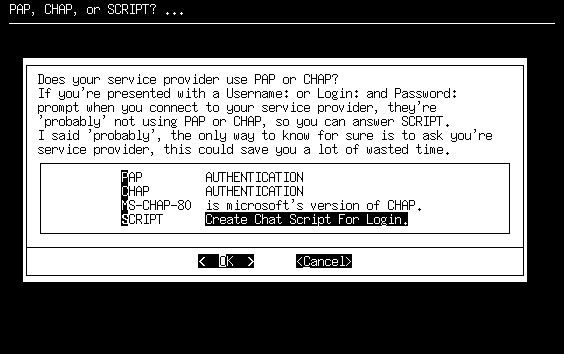
PAP or CHAP
If you selected “PAP” or “CHAP” on the authentication
method screen, you'll be prompted to enter your username. Your ISP should have
assigned you a username. If they didn't, there is something terribly wrong.
You will need to contact them and get a username.
Then, you should enter the password that your ISP assigned to you in
the next dialog box.
Chat script
If you selected “SCRIPT” on the authentication method screen,
you'll be presented with a fairly lengthy discussion of what a chat script is.
Make sure to read it because it describes everything very well. Basically,
you want to tell it what kind of information your ISP is going to send and
what your computer should send back to log in.
You'll then go into a loop of entering some text for what your computer
should expect from your ISP, followed by what information it should send
back. You can break this loop by hitting enter on an empty box.
Done
Finally, you'll be shown your complete ppp configuration files. You can't
really do anything about them, but you can at least check everything out.
Hit enter to save everything and leave pppsetup.
This screen also has a lot of information about how to bring up your
dialup connection and how to drop it after you are done. The
basic idea is this: as root, run ppp-go to start the
connection. Once it gives you a local and remote IP, you are connected and
on the internet. When you are done, run ppp-off as root
and it will drop the connection.